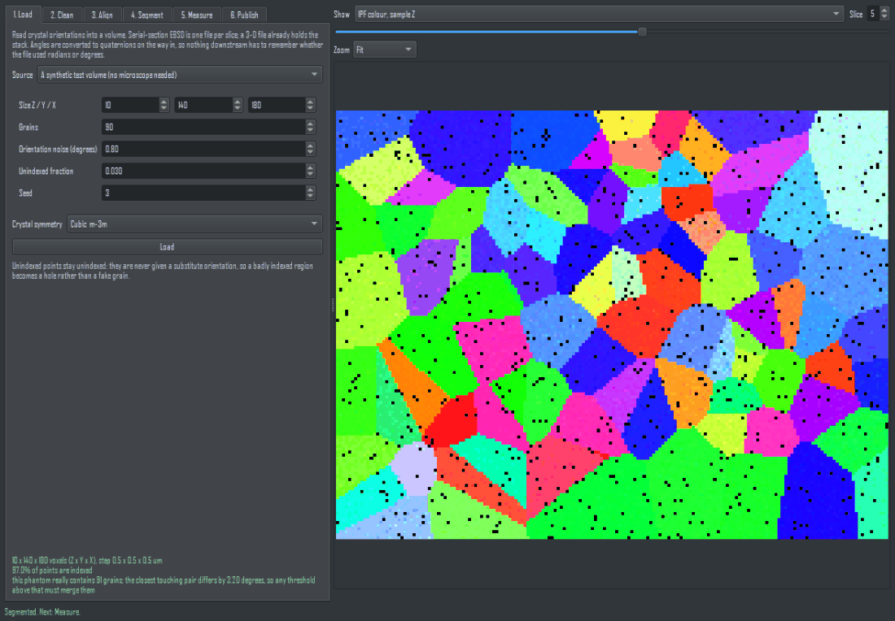
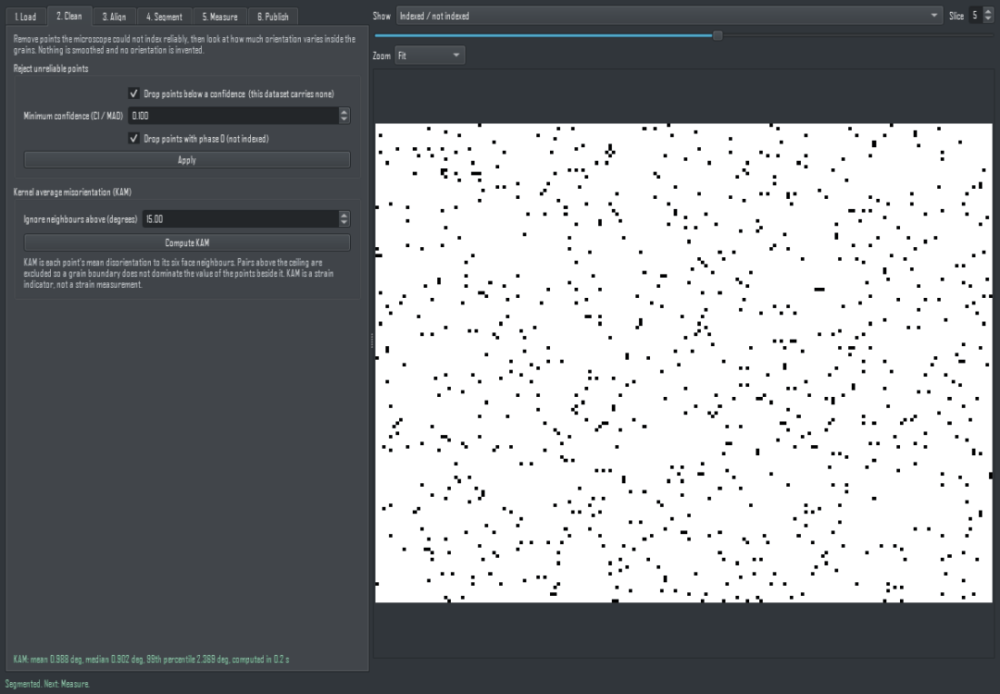
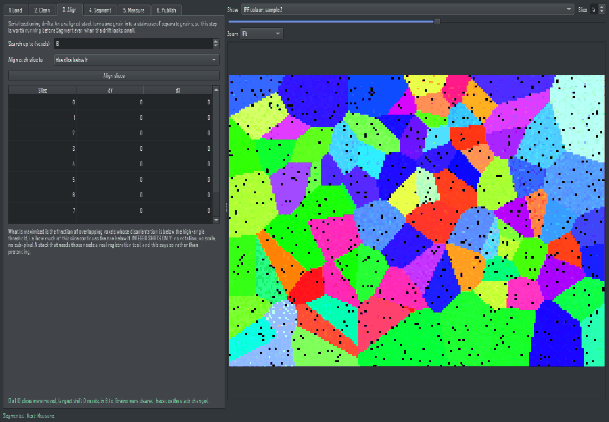
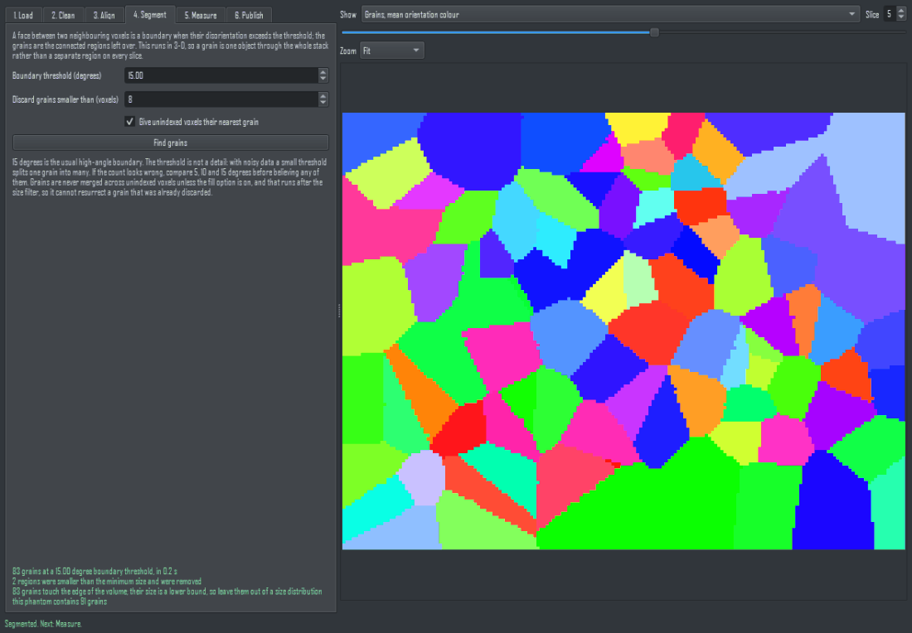
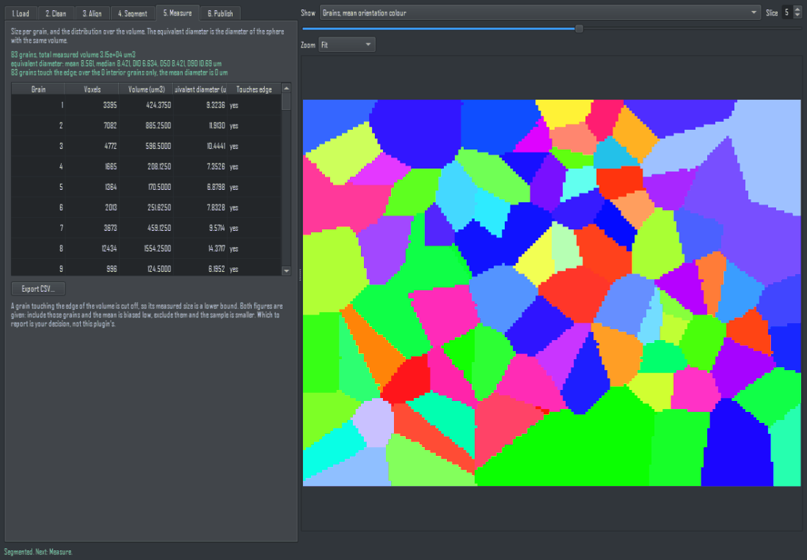

3D EBSD reconstruction - User Manual
Dragonfly Prototype Apps · 3D EBSD reconstruction...
Version 1.0 · 2026-09-01
1. Introduction
Electron backscatter diffraction measures a crystal orientation at every point of a surface. Serial sectioning repeats that measurement slice by slice, and this plugin turns the resulting stack into a three-dimensional grain structure.
The six tabs are the workflow itself, in order. Every tab is open from the start, so you can read and set them all before running anything; a step whose input does not exist yet refuses at its own button and names the step you have to run first. One button on the Load tab, Execute All Steps with Current Settings, runs the whole workflow unattended with the settings each tab shows at that moment.
Nothing is created or modified in your session until you press Publish on the last tab.
Why this is not just a colour segmentation. An IPF map is orientation rendered as colour, and two different orientations can be rendered in nearly the same colour. This plugin segments on the orientations themselves - the disorientation between neighbouring voxels, with crystal symmetry taken into account - so a twin that looks like one grain in colour is still two grains here. If you only have a colour picture of an IPF map and not the orientation data, use Color Image Processing instead, which says plainly that it decodes no orientation.
2. Conventions this plugin fixes
Every one of these is a documented source of wrong answers in EBSD work, so each is fixed once, at the boundary, and stated here.
- Euler angles are Bunge (ZXZ). .ang files store them in radians and .ctf files in degrees; the readers convert, so nothing downstream has to remember which file it came from.
- Quaternions are (w, x, y, z), unit length, with w >= 0, so a rotation has exactly one representation.
- What is reported is the disorientation: the smallest angle over all symmetry-equivalent representations. For cubic-cubic that can never exceed 62.8 degrees, which is the cheapest sanity check there is.
- Lengths are micrometres throughout the panel. When results are published, the spacing is converted to metres, which is what Dragonfly stores, so measurements made in Dragonfly agree with the Measure tab.
3. Tab 1 - Load
Three sources, chosen at the top:

Tab 1, Load. The file's own conventions are read and shown; nothing is assumed.
- A folder of serial sections (.ang / .ctf). Files are sorted naturally, so slice_2 comes before slice_10; plain alphabetical sorting gets serial sections wrong. You give the slice spacing, because no single-slice file records it.
- One 3-D file (HDF5, .h5ebsd, DREAM.3D). The dataset list is built by shape - a trailing axis of 3 (Euler) or 4 (quaternion) - not by name, and you choose from it, because a name alone does not prove what a dataset holds. Tick the box if the file stores degrees.
- A synthetic test volume, so the workflow can be tried without a microscope. It reports its own true grain count and the closest touching pair of orientations, which is the bound any threshold has to respect.
Set the crystal symmetry before loading. Grid shape is derived from the point coordinates, not from the header: a truncated export still claims its full size in the header, and trusting that reshapes the data into nonsense.
Unindexed points stay unindexed. They are never given a substitute orientation, so a badly indexed region becomes a hole rather than a fake grain.
4. Tab 2 - Clean
Drop points the microscope could not index reliably: below a confidence (CI in .ang, MAD in .ctf) or carrying phase 0. The controls are disabled, and say so, when the dataset carries no such column.

Tab 2, Clean. Every cleaning step reports how many points it changed, so a destructive setting is visible.
Cleaning always restarts from the data as loaded, so a threshold that was set too high can simply be lowered again without reloading.
Kernel average misorientation (KAM) is each point's mean disorientation to its six face neighbours. Pairs above the ceiling are excluded, not clipped, so a grain boundary does not dominate the value of the points beside it.
KAM is a strain indicator, not a strain measurement. It rises with stored dislocation content, but its absolute value depends on the step size and on the angular resolution of the indexing, so numbers are comparable within one dataset and not across instruments.
Running Clean or computing KAM clears any grains already found, because they would no longer match the data they came from.
5. Tab 3 - Align
Serial sectioning drifts. An unaligned stack turns one grain into a staircase of separate grains, so this is worth running before Segment even when the drift looks small.

Tab 3, Align.
What is maximised is the fraction of overlapping voxels whose disorientation is below the high-angle threshold - that is, how much of this slice continues the one below it. That is the thing that actually matters, rather than an image correlation on a colour rendering.
Integer shifts only: no rotation, no scale, no sub-pixel. A stack that needs those needs a real registration tool, and this says so rather than pretending. The shift applied to every slice is listed so you can see what happened.
6. Tab 4 - Segment
A face between two neighbouring voxels is a boundary when their disorientation exceeds the threshold; the grains are the connected regions that remain. This runs in 3-D, so a grain is one object through the whole stack rather than a separate region on every slice.

Tab 4, Segment. Grains are found from ORIENTATIONS, not from a picture; the threshold's sensitivity is published rather than hidden.
The threshold is not a detail. 15 degrees is the usual high-angle boundary, but with noisy data a small threshold splits one grain into many: on a phantom with 1 degree of orientation noise, 2 degrees gave over a thousand grains where 5 and 15 degrees both gave about 35. If the count looks wrong, compare 5, 10 and 15 degrees before believing any of them.
- Discard grains smaller than removes specks left by noise.
- Give unindexed voxels their nearest grain is the usual grain dilation clean-up, so small unindexed patches inside a grain do not punch holes in it. It runs after the size filter, so it cannot resurrect a grain that was already discarded.
Grains are never merged across unindexed voxels unless that option is on.
7. Tab 5 - Measure
Per grain: voxel count, volume, and equivalent diameter - the diameter of the sphere with the same volume. Over the volume: mean, median and D10 / D50 / D90.

Tab 5, Measure.
A grain touching the edge of the volume is cut off, so its measured size is a lower bound. Both figures are given: include those grains and the mean is biased low, exclude them and the sample is smaller. Which to report is your decision, not this plugin's.
Export CSV writes every grain, including its mean orientation as a quaternion. The mean orientation of a set of rotations is computed as the dominant eigenvector of the summed outer product, which is invariant to each quaternion's arbitrary sign.
8. Tab 6 - Publish
The grains go in as a MultiROI, which is what a segmentation is in Dragonfly: one label per grain, named with its size and coloured by its own mean orientation.
Tab 6, Publish. A segmentation publishes as a MultiROI; the IPF and KAM channels are optional extras, labelled as renderings.
Optionally the IPF colouring goes in as three Red / Green / Blue channels, and KAM as a channel in degrees.
The IPF channels are a rendering, not data. TSL, Oxford and MTEX shade the standard triangle differently, so colours from this plugin and from a vendor package are not comparable pixel for pixel, and nothing here can turn a colour back into an orientation. The grain MultiROI and the CSV are the measurement.
Voxel spacing is written from the step size you gave on the Load tab, converted to metres. If it could not be set on some object, the panel says so instead of leaving you to discover it by measuring.
9. What this plugin does not do
- It does not index diffraction patterns. It starts from orientations a vendor package has already indexed.
- It does not do sub-pixel or rotational slice registration. Integer shifts only.
- It does not compute HR-EBSD elastic strain, and KAM is not a substitute for it.
- It does not identify twins or special boundaries by their sigma value, and does not produce a misorientation distribution function or a pole figure.
- It does not colour non-cubic IPF maps. Hexagonal symmetry is supported for misorientation and segmentation, but the IPF colouring refuses rather than guessing a convention.
- It does not invert a colour back into an orientation, which is why an IPF picture alone can never be used as input here.